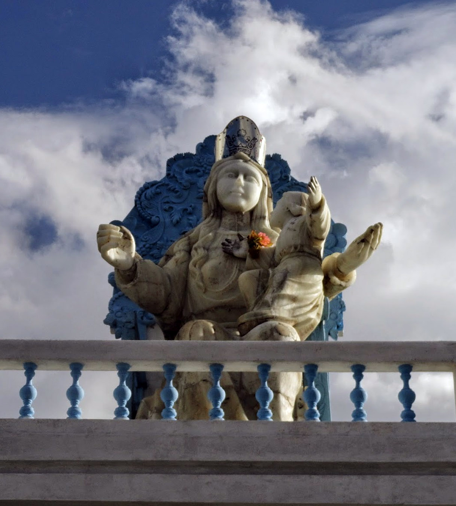
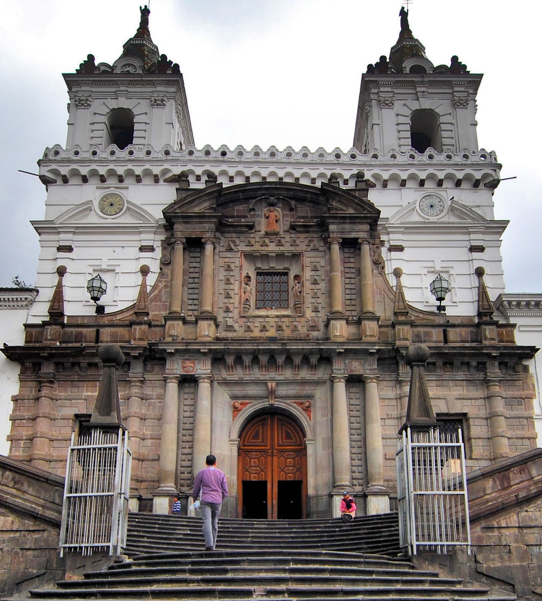
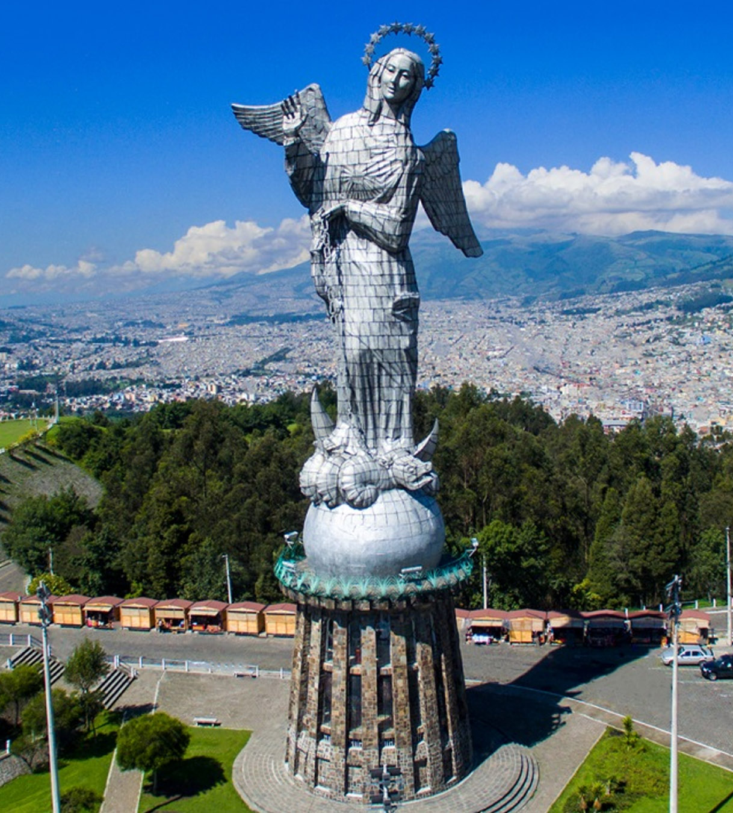
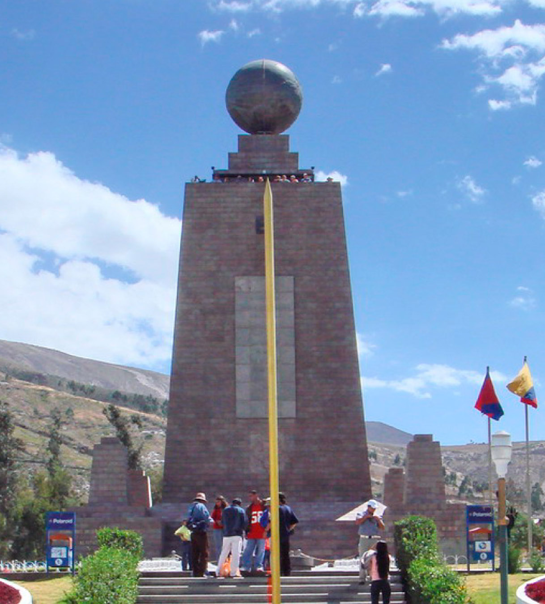
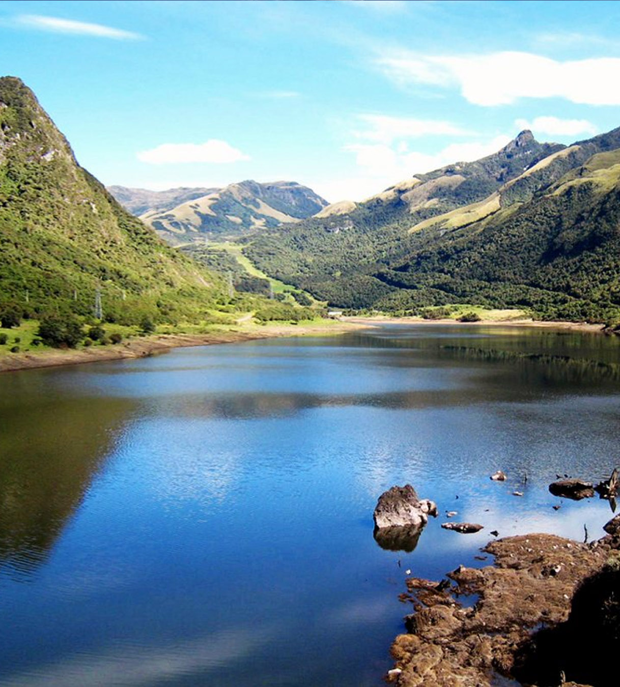

Hacia un camino por explorar!







Puntiagudas rocas que casi rozan la ventana del tren por un lado y profundos
abismos al otro dibujan la ruta de la "Nariz del Diablo". Es la vía férrea que
recorre el corazón de los Andes por la ruta Alausí-Sibambe, donde el diablo dejó
olvidada su nariz. Para quienes creen en el diablo y aceptan su alegórica
representación, basta alejarse un poco de la estación de Sibambe y sumar un poco
de imaginación para apreciar en el monte de Pistishi la forma de una inmensa
nariz, el gran atractivo del tramo.
El ferrocarril de Ecuador comenzó en el
Gobierno del conservador Gabriel García Moreno en 1861 y lo terminó el liberal
Eloy Alfaro en 1908, en una campaña considerada audaz para la época y que resulta
intrépida, incluso, a ojos del siglo XXI. La leyenda dice que hizo un pacto con el
diablo para acabar la obra, que se saldó con la muerte de 4.000 jamaiquinos en
medio de las explosiones de dinamita, por enfermedades, derrumbes y picaduras de
serpientes. Pero para las más de 3.000 personas de las comunidades cercanas, la
ruta de la Nariz del Diablo no tiene nada de diabólico y, más bien, se ha convertido
en un importante puntal de su economía.
La complejidad de la zona y las altas
montañas también le han dado la denominación de tren del cielo, lo que inspiró a
artistas que plasmaron trenes voladores sobre coloridas ciudades, en tanto que en el
extranjero muchos lo conocen como "el tren más difícil del mundo".
Amante y jugador de los videojuegos desde hace años, fanático de la tecnología y degustador de series de anime y comics.